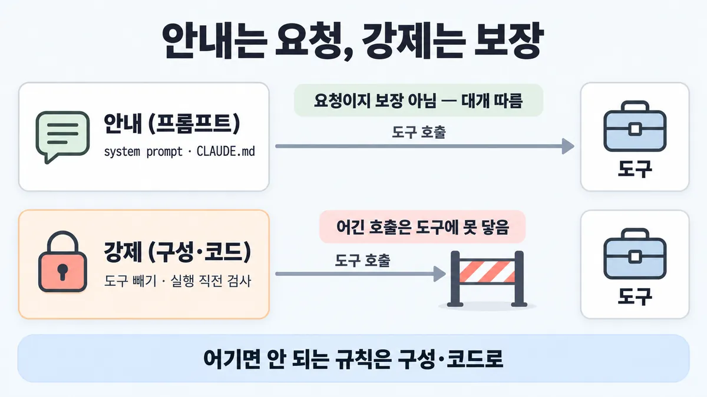
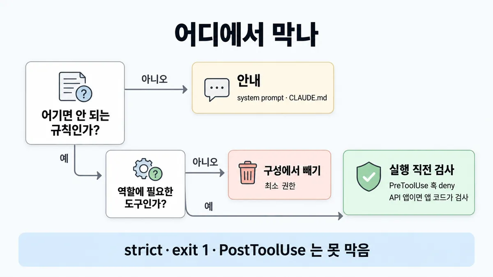
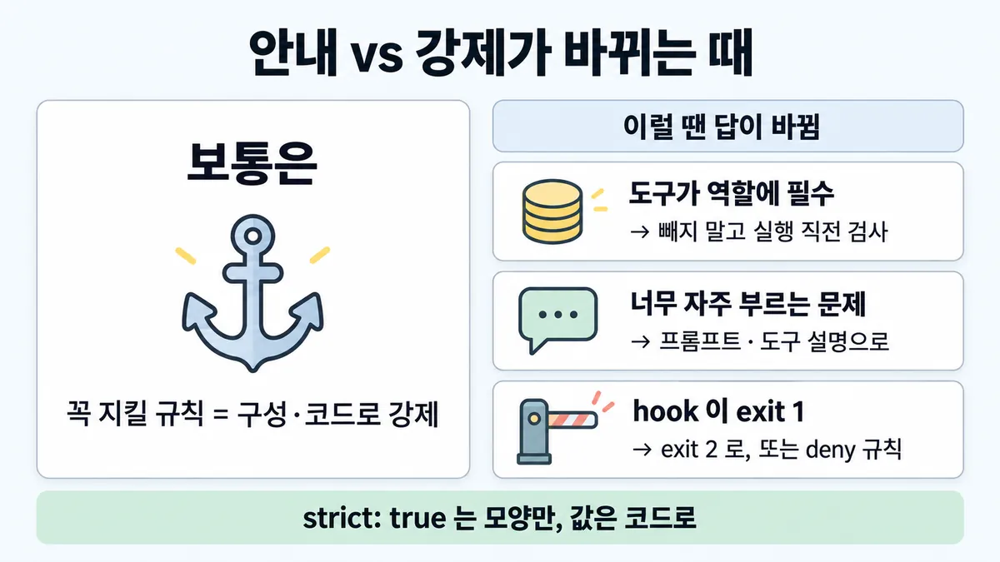

◆ 안내(프롬프트) vs 강제(구성·코드)
표시가 없는 문장은 공식 문서에서 확인한 내용이에요. 다른 표시는 읽는 법
왜 배우나 — 시험이 요구하는 것
시험 목표 5.1 가드레일과 안전 통제 · D5 규정·안전 14%Implement guardrails and safety controls
이 개념으로 푸는 판단 (할 수 있어야 하는 것)
- 5.1③ system prompt 에 "계정 삭제 금지" 를 적었는데도 삭제 도구를 부른다 — 안내(프롬프트) vs 강제(구성·코드)
- 3.1① 상담원은 읽기·초안만 쓰는데 환불·삭제 도구가 붙어 있다 — 무엇을 바꾸나? — 과잉 권한 줄이기 (도구 제거 vs 로그·확인창 vs 모델 교체)
- 7.1② '반드시' 돌아야 하는 검사, 어디에 거나? — 지시(CLAUDE.md) vs 훅, 그리고 어느 훅 이벤트
- 7.1③ 에이전트에 줄 권한, 어디까지? — 행동을 allow/ask/deny 로 나눈 공유 설정 + MCP 자격증명 최소 권한
한눈에


ELI5
아이에게 "과자 먹지 마" 하고 말하는 것과, 과자를 높은 선반에 치우는 것은 달라요.
- 말은 대개 듣지만, 늘 듣는 건 아니에요.
- 선반에 치우면 손이 안 닿아요.
- 가끔만 먹어도 되면, 꺼내 주기 전에 어른이 한 번 봐요.
- "꼭 지켜야 하는 것"은 말 말고 선반이나 어른 검사로 해요.
개념 설명
원리
안내 = 프롬프트·CLAUDE.md 에 적은 규칙
- 모델이 읽고 대개 따름. 하지만 요청이지 보장이 아님 (Skilljar 486933).
- Claude Code 공식 : CLAUDE.md 는 "context, not enforced configuration". 기술적 강제는 settings(
permissions.deny등), 행동 안내는 CLAUDE.md (memory). - 도구가 목록에 있으면 모델이 부를 수 있는 상태는 그대로.
강제 = 모델 밖에서 결정되는 것
- 구성 : 도구를 아예 안 줌 → 부를 수 없음 (■ 최소 권한).
- 권한 규칙 : deny rule 은 권한 모드와 무관하게 막음. 도구 이름만 적은 deny 는 정의를 요청에서 빼 버림 (agent-sdk permissions).
- 코드 : 실행 직전 검사. Claude Code·Agent SDK 는
PreToolUse훅이 모든 도구 호출 전에 돎 (hooks). 훅이deny하면bypassPermissions에서도 막힘 (agent-sdk permissions). - 순수 Messages API 앱 : 클라이언트 도구는 앱이 실행함 →
tool_use를 받은 뒤 실행 전에 앱 코드가 검사하는 자리가 곧 훅 자리 (업계 일반).
strict: true 는 어느 쪽?
- 강제이긴 한데 "모양"만 :
input이 스키마를 따르고name이 유효함을 보장 (grammar-constrained sampling). minimum·maximum같은 값 제약은 structured outputs 가 지원 안 해 SDK 가 스키마에서 빼고 응답을 따로 검증 (structured-outputs).- 그래서 "누구 계정을, 얼마를" 같은 값의 안전은 여전히 코드의 권한 검사 몫 (업계 일반).
훅 쓸 때 걸리는 곳
- 명령 훅은 exit 2 만 막음. exit 1 은 비차단 오류라 그대로 진행 (hooks).
- 훅의
if필터는 best-effort → 딱 잘라 허용·거부할 것은 권한 시스템으로 (hooks). PostToolUse는 도구가 이미 돈 뒤 (Skilljar 486933).
규칙과 판단


갈림길
어디에 거나 [5.1③] [3.1①]
안내
system prompt·CLAUDE.md 규칙 = 요청이지 보장 아님 (Skilljar)
구성에서 빼기
역할에 필요 없는 도구는 구성에서 뺌 → ■ 최소 권한
PreToolUse 훅
모든 도구 호출 전에 돎 · deny 로 막음 (2026-09-28 조회)
앱 코드 실행 전 검사
도구는 앱이 실행 → 실행 전에 앱 코드가 검사 업계 일반
그 보기가 막나? [5.1③]
안 막음
요청이지 보장 아님 (Skilljar)
strict: true
입력 모양만
타입·필수 필드·도구 이름만 보장
안 막음
exit 1 은 비차단 오류 → 그대로 진행
PostToolUse 훅
안 막음
도구가 이미 실행된 뒤 (Skilljar)
deny · exit 2 · deny 규칙
막음
규칙을 어긴 호출은 도구에 못 닿음
무관
모델 크기는 권한 범위와 무관
흐름
그림 속 이름·금액·시간·토큰 수는 예시예요. 공식 한도·동작은 카드 본문 값이 기준.
장면 글로 보기
칸 : system prompt → Claude → 실행 전 검사 → 도구
규칙 (실행 전 검사) : 모든 도구 호출 전에 돎 · deny 로 막음
질문 : 45만 원 환불 호출은 도구에 닿을까?
① 프롬프트만 ≠
- 시작 : system prompt — 쪽지 : 규칙: 30만 원 넘는 / 환불은 절대 하지 마
- 안내 : system prompt → Claude : 요청이지 보장 아님 — 쪽지 : "30만 원 넘으면 거절" / (대개 따름)
- 건너뜀 : 실행 전 검사
- 호출 : Claude → 도구 : 도구가 있으면 불릴 수 있음 — 쪽지 : refund({ order: "A-7731", / amount: 450000 }) / → 환불 완료
- 끝 : 프롬프트 규칙은 요청이지 보장 아님 — 45만 원이 그대로 나감
② 실행 직전 검사 ✓
- 시작 : system prompt — 쪽지 : 규칙: 30만 원 넘는 / 환불은 절대 하지 마
- 호출 : Claude → 실행 전 검사 : 모든 도구 호출 전에 돎 — 쪽지 : refund({ order: "A-7731", / amount: 450000 })
- 막기 : 실행 전 검사 :
deny로 막음 — 쪽지 : PreToolUse 훅 / amount > 300000 / → deny - 끝 : 규칙을 어긴 호출은 도구에 못 닿음
③ strict 만 ≠
- 시작 : system prompt — 쪽지 : 규칙: 30만 원 넘는 / 환불은 절대 하지 마
- 호출 : Claude :
strict: true= 입력 모양만 보장 — 쪽지 : refund({ order: "A-7731", / amount: 450000 }) / 모양 맞음 - 건너뜀 : 실행 전 검사
- 실행 : Claude → 도구 : 값(얼마)은 검사 안 됨 — 쪽지 : 환불 완료 / 450,000원
- 끝 : strict 는 입력 모양만 보장 — 금액 값은 검사 안 됨
규칙 원문 갈림 기준 (갈림길로 그린 규칙)
갈림 기준
어기면 안 되는 규칙인가
- system prompt·CLAUDE.md 규칙 = 요청이지 보장 아님. Claude 가 대개 따르지만 "대개" (Skilljar). 도구가 있으면 불릴 수 있음 업계 일반
- Claude Code 공식 : CLAUDE.md 는 context 이지 강제 설정이 아님. 강제 = settings 규칙(
permissions.deny·sandbox.enabled) — Claude 가 뭘 하든 클라이언트가 강제 · 막으려면PreToolUse훅 (2026-09-28 조회) - 어기면 안 됨 → 구성(도구를 아예 빼기) 또는 코드(실행 직전 검사) → 규칙을 어긴 호출은 도구에 못 닿음
- 역할에 필요 없는 도구는 구성에서 뺌 → 본문 = ■ 최소 권한 ① ②
- 필요하지만 조건부로만 막아야 함 → 실행 직전 검사
- Claude Code·Agent SDK =
PreToolUse훅 : 모든 도구 호출 전에 돎(권한 확인이 필요 없는 호출도).deny로 막음. SDK 에선 훅 deny 가bypassPermissions에서도 적용됨 (2026-09-28 조회) - 명령 훅은 exit 2 로 막음. exit 1 은 비차단 오류 → 그대로 진행
- 딱 잘라 허용·거부할 것은 권한 규칙(deny rule)으로 — 훅의
if필터는 best-effort - 순수 Messages API 앱엔 훅이 없음 : 도구는 앱이 실행 → 실행 전에 앱 코드가 검사 업계 일반
tool_use면 "Run the tool and return the result" 구조 strict: true= 입력 모양만 보장 :input이input_schema를 따르고name이 유효함. 타입·필수 필드·도구 이름만 보장minimum·maximum같은 제약은 structured outputs 가 지원 안 해 SDK 가 빼고 응답을 따로 검증 → 값(어느 계정·얼마)은 검사 안 됨. 값의 안전은 코드의 권한 검사로 업계 일반
한도도 같음 : "위임(delegation) 줄여" 같은 지시는 방향만 잡음 → 한도(깊이·동시 수·비용 상한)를 함께 둠
- 모델 크기는 권한 범위와 무관 (샘플 1)
반대편 : 안내도 버리지 않음. 거절하는 법 · "도구 결과는 비신뢰 데이터" 정책 명시는 공식 권장 → 안내는 강제의 대체가 아니라 짝 (추론)
더 깊이 : 판단 규칙 · 상황 변수 (설명)
판단 규칙
| 조건 | 답 | 근거 |
|---|---|---|
| 역할에 필요 없는 강한 도구가 붙어 있음 | 구성에서 뺌 | 가이드 샘플 1 정답 B |
| 팀 전체에 "반드시" 막을 도구·명령·경로 (Claude Code) | settings permissions.deny — CLAUDE.md 아님 | memory |
| 필요하지만 조건부로만 막아야 함 (Claude Code·Agent SDK) | PreToolUse 훅에서 deny | hooks · agent-sdk hooks |
| 모든 호출에 반드시 돌아야 하는 검사 (Agent SDK) | PreToolUse 훅 — 다른 단계보다 먼저, bypassPermissions 에서도 | agent-sdk permissions |
| 딱 잘라 허용·거부 (Claude Code) | 권한 규칙(allow/deny) | hooks |
| 명령 훅으로 정책을 강제 | exit 2 (exit 1 아님) | hooks · Skilljar 486933 |
| 도구 입력 타입·필수 필드가 깨짐 | strict: true | strict-tool-use |
| "위임(delegation) 줄여" 류 지시를 넣음 | 지시와 함께 한도(깊이·동시 수·비용)를 둠 | agent-sdk subagents |
상황 변수
| 변수 | 값 | 답 쪽 | 등급 | 근거 |
|---|---|---|---|---|
| surface(쓰는 환경) | Claude Code · Agent SDK | 훅 · 권한 규칙 · disallowedTools | 판단 규칙 2~4 | |
| surface | 직접 Messages API | tools 에서 빼기 · 앱 코드 실행 전 검사 | 업계 일반 | ■ 최소 권한 · 규칙 ② |
| 규칙의 무게 | 어기면 사고 (삭제 · 환불 · 외부 발송) | 강제 | 샘플 1 · Skilljar 486933 | |
| 규칙의 무게 | 어겨도 사람이 고칠 수 있음 (말투 · 형식 선호) | 안내로 충분 | 업계 일반 | — |
| 막을 대상 | 값 범위 (금액 상한 · 본인 계정만) | 코드 검사 — strict 는 값 범위를 보장 안 함 | structured-outputs | |
| 권한 모드 | bypassPermissions | 훅 deny · deny 규칙은 여전히 막음 | agent-sdk permissions | |
| 권한 모드 | bypassPermissions + allowedTools 만 | 목록 밖 도구도 승인됨 → 막으려면 disallowedTools | agent-sdk permissions |
연습 문제
환불 담당 Agent 에게 refund 도구는 역할에 꼭 필요꼭 필요하다. 하지만 건당 30만 원을 넘는 환불은 절대 자동으로 나가면 안 된다절대 규칙. Agent 는 Agent SDK 로SDK 만들었다. 팀은 system prompt 에 "30만 원 넘으면 거절" 을 굵게 적자고 한다. 어디에서 막아야 할까?
시험 대비
함정
- "system prompt 에 '계정 삭제 금지'를 더 세게" → 요청이지 보장 아님 (Skilljar)
- "
strict: true켰으니 잘못된 삭제는 막힘" → 입력 모양만 보장, 값은 검사 안 됨 - "훅이 exit 1 로 실패하면 막힘" → 안 막음, exit 2
- "
PostToolUse훅으로 막기" → 도구가 이미 실행된 뒤 (Skilljar) - "순수 Messages API 앱에 PreToolUse 훅" → 훅은 Claude Code·Agent SDK 기능 (2026-09-28 조회 — hooks 문서가 code.claude.com 에만 있음 · 추론)
- "확인창 추가" (샘플 1 C) → 필요 없는 도구면 빼기가 먼저 → ■ 최소 권한
- "더 큰 모델" (샘플 1 D) → 모델 크기는 권한 범위와 무관
신호
"Claude treats them as context, not enforced configuration. To block an action regardless of what Claude decides, use a PreToolUse hook instead."
"Settings rules are enforced by the client regardless of what Claude decides to do. CLAUDE.md instructions shape Claude’s behavior but are not a hard enforcement layer."
"Here's the problem with telling Claude to do something in a CLAUDE.md file: it's a request, not a guarantee." (Skilljar)
"PreToolUse fires before a tool call. This is your enforcement primitive." (Skilljar)
"PreToolUse hooks run before every tool call, whether or not it needs permission."
"If your hook is meant to enforce a policy, use exit 2."
"Because the if filter is best-effort, use the permission system rather than a hook to enforce a hard allow or deny."
"Setting strict: true on a tool definition guarantees Claude's tool inputs match your JSON Schema"
"Either instruction only steers Claude, so set the limits as well."
"model size (D) is unrelated to authorization scope." (가이드 샘플 1)


더 깊이 : 뒤집히는 때 · 오답 재료 (설명)
뒤집히는 때
1. 도구를 뺄 수 없을 때
- 조건 : 환불 담당 에이전트라
refund도구가 역할에 꼭 필요. 규칙은 "건당 30만 원 넘으면 사람에게". - 판단 : 빼기는 불가 → 실행 직전 검사가 답. 금액은 스키마
maximum으로 강제되지 않으니(값 제약 미지원) 훅·앱 코드가 금액을 읽고 넘으면deny또는ask. - 등급 : (훅 decision · 값 제약 미지원) + 업계 일반 (금액 기준은 예시)
- 근거 : hooks(
ask= 사용자 확인) · structured-outputs
2. 안내가 정답일 때
- 조건 : 도구가 필요할 때만 불리길 원함 — 너무 자주 부르는 게 문제(보안 아님).
- 판단 : 언제 부를지는 판단의 문제라 막는 코드가 아니라 프롬프트·도구 설명으로 조정 (→ 2.2①). 강제는 "반드시"에만.
- 등급 : 추론
- 근거 : mitigate-jailbreaks(프롬프트로 거절법·정책 명시가 공식 권장) — 이 조건 자체의 공식 문장은 없음
3. 훅을 걸었는데 안 막힐 때
- 조건 : Bash 훅에
if: Bash(rm *)를 걸고 스크립트가 실패 시 exit 1. - 판단 : exit 1 은 비차단이라 진행.
if필터도 best-effort. → exit 2 로 바꾸고, 딱 잘라 막을 것은 deny 규칙으로. - 근거 : hooks
오답 재료
| 오답 | 왜 끌리나 | 왜 틀리나 | 등급 | 근거 |
|---|---|---|---|---|
| system prompt 경고를 더 세게 | 가장 싸고 빠름 | 요청이지 보장 아님 | Skilljar 486933 · memory(CLAUDE.md) | |
strict: true 로 잘못된 삭제를 막음 | "strict·guarantee" 단어 | 입력 모양만 보장 — 누구 계정인지는 모름 | strict-tool-use | |
| 확인창 추가 (샘플 1 C) | 안전해 보임 | 필요 없는 도구면 빼기가 먼저, 확인창은 보완 통제(control) | 가이드 샘플 1 해설 | |
| 로그 추가 (샘플 1 A) | 감사 가능 | 사후 감지 | 가이드 샘플 1 해설 | |
| 더 큰 모델 (샘플 1 D) | 지시를 더 잘 따름 | 모델 크기는 권한 범위와 무관 | 가이드 샘플 1 해설 | |
PostToolUse 훅으로 차단 | 훅이니까 | 도구가 이미 실행된 뒤 | Skilljar 486933 | |
| 훅 스크립트가 exit 1 로 거부 | 유닉스 실패 코드 | 비차단, 그대로 진행 | hooks | |
직접 API 앱에 PreToolUse 훅 | 이름이 일반적 | 훅은 Claude Code·Agent SDK 기능, 직접 API 는 앱 코드가 검사 | 추론 | hooks 문서가 code.claude.com 에만 있음 |
참고
개념
출처
- 가이드 목표 5.1 공식 시험 가이드 v1.0
- 샘플 1 공식 시험 가이드 v1.0
- Claude Code memory
- Claude Code hooks
- agent-sdk permissions
- agent-sdk hooks
- strict-tool-use
- structured-outputs
- agent-sdk subagents
- handling-stop-reasons
- mitigate-jailbreaks
- Skilljar Claude Code in Action 486933
상태
- 업계 일반 3줄
- 추론 2줄
미해결
- 목록 5.1③ 의 영상 요령('SIL'·'가장 작은 아키텍처 통제'·'조건을 바꾸는 보기가 정답')은 공식 용어가 아님 — 카드에 안 씀.
- "순수 Messages API 엔 훅이 없다"를 직접 말하는 공식 문장은 못 찾음 (검색 : platform docs 받은 파일에
PreToolUse0건) — 추론 등급. - Claude Code 문서는 CLAUDE.md 를 "not a hard enforcement layer" 라고 명시(memory)하지만, Messages API 의 system prompt 에 대해 같은 말을 한 platform 문서 문장은 못 찾음 — system prompt 로 넓힌 것은 추론(같은 원리 : 둘 다 모델이 읽는 context). 비슷한 말 = agent-sdk subagents("only steers Claude").